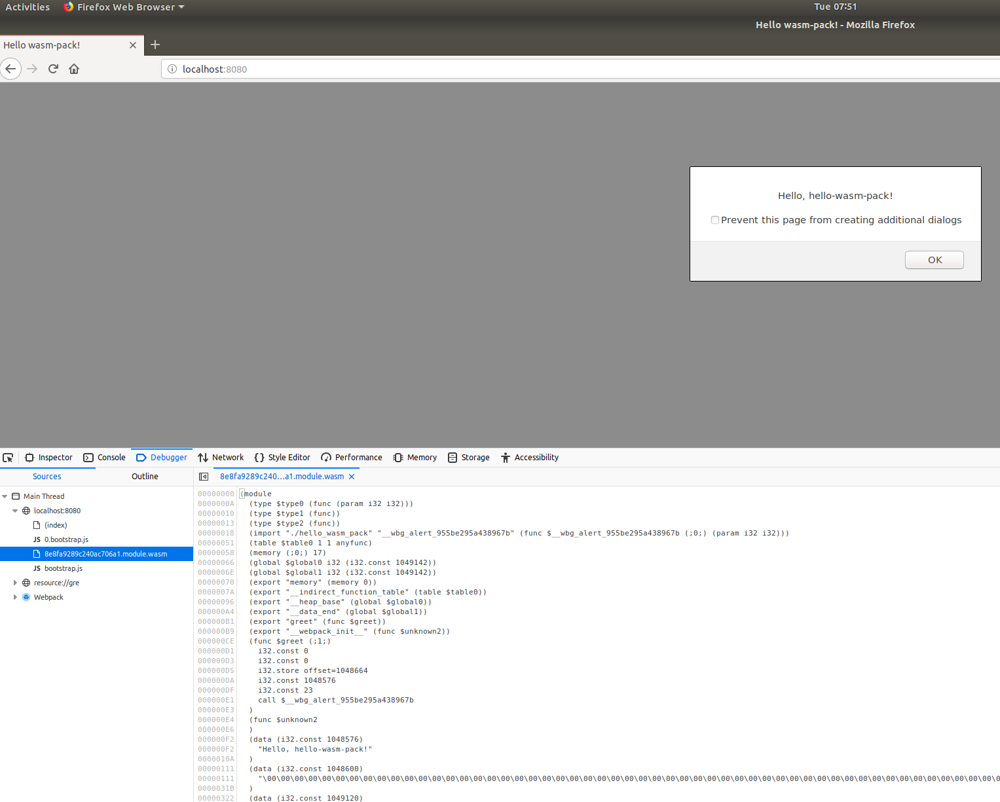

Rust Top-Down
This is an overview/tutorial of the Rust programming language for progrmamers coming from 'higher' level languages.
Rust is best groked from a C++/C perspective, so some content that attends to the background of programmers with Java/.NET/Python backgrounds lets us skip a few topics, but more importantly post warning signs where OO thinking may introduce obstacles to success.
The Rust Programming Language - aka 'The Book' is a great resource and should certainly be used in conjuction with the content if you are new to Rust programming.
Rust code and libraries are also easily 'self-documented', and one of the best examples is the std crate. (a crate being the equivilant of an npm or nuget package). std For core concepts (e.g. references, types, etc.), the api documentation often provides conceptual context that is very helpful.
A personal favorite, though sparse in parts, is the [reference book].(https://doc.rust-lang.org/stable/reference/) It's readable and not strictly a formal reference.
Keep in mind that post-install, you have the core documentation installed locally. Launch with rustup doc
How to Use
-
The content/progress is fairly linear.
-
The README for each chapter explains concepts and then typically presents an exercise.
-
If you fork or clone this repository, most of the exercises are in the /src folder.
-
You know how you learn best, but taking the examples, tweeking them, and playing with the problem/topics works well for most.
-
The original content was developed as part of an in-house course on Rust, and is a WIP, so some oddities may appear.
Objectives
- Provide an introduction to Rust that will get you moving, quickly
- Keep the lessons small and focused, one or two topics, max
- Build a solid foundation in Rust for further development
- Provide contextual information for OO programmers looking for a frame of reference
Other Notes and Tips
- Resist the temptation to skim the Rust documention, jump over to github, pull a random project and start compiling. A good foundation will get you moving faster.
- Rust code can be a bit intimidating at first glance (and even after a few more glances). However you're not obliged to use the advanced features of the language to get moving. There are solid applications and libraries that are light on generics, inter-thread communication, macros, unsafe code, etc.
The OO Perspective
For the OO programmer, a few things about Rust stand out:
- Functionality (often traits), is decoupled from data structures (structs or enums).
- "You get what you get" - there's very little in the way of 'inherited' functionality.
- There is no NULL. It is replaced, by convention, by wrapping
Nonein anOption<T> - You're accountable for the memory life of your allocations, though Rust, through compile-time rules, assists, vigorously.
- Iteration and closures are first-class citizens in code composition.
- The allocation-related rules above have significant consequences, especially for recursive-types (e.g. graph nodes), associated types, and thread-safe types.
Some of the language's appeal:
- A garbage-collection free, lightweight runtime that is memory safe.
- Incredible performance.
- Generics
- Fearless concurrency
Lessons
| Lesson | Content |
|---|---|
| Lesson One | Setup and passing/returning String |
| Lesson Two | Standard Lib, Types, Immutability |
| Lesson Three | Introduction To Traits |
| Lesson Four | Enum Wrappers, Option |
| Lesson Five | Error Handling Basics |
| Lesson Six | Loops and Almighty Iterators |
| Lesson Seven | Housekeeping (proj structure, some new types, etc.) |
| Lesson Eight | Closures and a Peek at Lifetimes |
| Lesson Nine | Lifetimes |
| Lesson Ten | Unit Testing |
| Lesson Eleven | TBD |
| Lesson Twelve | Trait Bounds |
| Lesson Thirteen | Patterns of Constructors |
| Lesson Fourteen | Patterns of Iterators |
| Lesson Fifteen | The Copy, Clone and Sized Traits |
| Lesson Sixteen | and returning Traits |
| Lesson Seventeen | Functions vs. methods and impl on structs |
| Lesson Eighteen | Slices in Retrospect |
| Lesson Nineteen | Web Assembly (WASM) |
| Lesson 20 | The Sized Trait |
| Lesson 21 | Environment variables and the command line |
| Lesson 22 | File I/O and Serde |
| Lesson 23 | Ref Stuff |
| Lesson 24 | Associated types on traits |
| Lesson 25 | The Sized Trait |
| Lesson 26 | Housekeeping Part 3 |
| Lesson 27 | Web (and other) Assembly |
| Lesson 28 | TBD |
| Lesson 29 | Futures |
| Lesson 30 | Pluggable Runtimes and Async/Await |
Lesson One: Setup and returning a String
Objectives
- Get Rust installed
- Look at the toolchain (rustc, cargo, rustup)
- Create a function that returns a value
Installing
Installing Rust - This installs the toolchain (compiler and package manager (cargo) - Windows, OSX, Linux and other OS's are supported.
- Verify your installation worked by opening a command/terminal prompt and typing:
rustup
rustc
cargo
Get to Know the toolchain
rustc is the compiler, but it's normally called by running a 'cargo' command (e.g. cargo build)
This command:
rustup show
shows you your default / active toolchain. Something like:
installed toolchains
--------------------
stable-x86_64-unknown-linux-gnu (default)
nightly-x86_64-unknown-linux-gnu
active toolchain
----------------
stable-x86_64-unknown-linux-gnu (default)
rustc 1.37.0 (eae3437df 2019-08-13)
You can switch the active toolchain or compile with a specific toolchain. Look at the 'rustup' command for details.
Cool Note
Type rustc, and look at the option for emit that specifies the output format, including asm (assembly) and llvm-ir
--emit [asm|llvm-bc|llvm-ir|obj|metadata|link|dep-info|mir]
Comma separated list of types of output for the
compiler to emit
Tool Summary
So, there are three tools to get straight:
| Tool | Purpose |
|---|---|
rustup | Doc and toolchain related |
cargo | Rust project builder, runner, invoker sort of like ~npm |
rustc | The rust compiler, though you will likely invoke it via cargo |
Launch the Local Doc
You're going to need it. ;)
rustup doc
Review the Cargo.toml
Take a look at the format of the Cargo.toml. That's the package.json / .proj manifest file for Rust.
The most important part is the 'dependencies' section. There are dependencies and dev-dependencies and many other options Rust manifest
Exercises
You have some choices on runnning the exercises:
- Run inside of the doc via playpen (look for the play button)
- Clone or fork this repository and navigate to the lesson directory and run with
cargo run - Brew your own repo, optionally copying-pasting code
| Exercise | Purpose |
|---|---|
| Calling a Function | Kicking the Tires |
Calling a Function
fn main() { let name = "Rustican"; let function_result = greetings(name); println!("{}", function_result); } fn greetings(name: &str) -> String { "Hello ".to_string() + name }
Try running this with the play button above.
Code Dissection
Two elements jump out here: println! and &str:
One-by-one:
The println!
# #![allow(unused_variables)] #fn main() { println!(function_result); #}
The println! 'function' lives in std::io::println But, it's not a function, it's a macro.
The little '!' at the end of println is not 'not.' It means it's a macro.
A macro is a meta-code generation feature that lets macro authors expand simple syntax (hopefully), into something that would otherwise be unduly complex or repetitive.
A macro author writes the rules (the macro) for the expansion.
You needn't author macros to code in Rust, but you will use them.
# #![allow(unused_variables)] #fn main() { fn greetings(name: &str) -> String #}
The &str
- There are two string types in Rust. Rust Strings
- The
&strtype is a string slice. It's a pointer to some UTF-8 bytes, so we know it's length, precisely. - The
Stringtype is dynamically sized, and is conceptually close to a Java or .NET String class.
The challenge is that we frequently move back and forth between the two.
The secret-sauce of Rust, compile-time checks, requires that all types allocated have a known-size. Consequently, many of the operations on strings are done on the &str type and there are reasons (forthcoming) to prefer the &str as a parameter.
So, in the code:
nameis actually a string slice&strand is passed accordingly to thegreetingsfunction- The
to_stringfunction makes our&stra String. (Think to_String() with a big S). - Our concatenation operator
+takes a&strand aStringand returns aString. - That String is returned and used as the parameter to the println! macro.
Again:
fn main() { let name = "Rustican"; let function_result = greetings(name); println!("{}", function_result); } fn greetings(name: &str) -> String { "Hello ".to_string() + name }
Implicit Return
The return keyword is not specified and ; is not required in this case.
This works:
# #![allow(unused_variables)] #fn main() { fn return_something() -> i32 { 1 } #}
But, this fails to compile (but would with a return 1; statement)
# #![allow(unused_variables)] #fn main() { fn return_something() -> i32 { 1; } #}
Task
Play around with the code block. Don't worry if you hit errors at this point.
Lesson Two: The Standard Library, Basic Types and Immutability
Objectives
- Understand basic variable assignments, types and fundamental borrowing rules
- Understand what the standard library is and when it might not be used
The Foundation We are Standing on (normally): std
Take a look at the Rust standard library std
Normally, we'll be using the standard library but it's not required. Embedded devices, may or may not have a file system, for example, and sans std lib, we can stillwcode Rust for those devices.
Libraries or binaries/executables with:
#![no_std]
instruct the compiler to reject any use of the standard library.
Some good resources on embedded programming with Rust:
- [Discover embedded programming with Rust (good for getting started)] https://docs.rust-embedded.org/discovery/
- [The Embedded Rust Book] (https://docs.rust-embedded.org/book/)
Immutability
By default Rust values are immutable and the compiler enforces compliance.
# #![allow(unused_variables)] #fn main() { let x = 10; x = 12; #}
produces a compile error.
# #![allow(unused_variables)] #fn main() { let mut x = 10; x = 12; #}
works because the variable is marked as mutable (changeable)
Race Conditions, Fearless Concurrency and Why Rust Helps:
Let's say we have a Point of Sales system, and there are many run-time configuration options/rules. A developer writes some code and then updates those options. Developer B, in a different module, does the same. When those updating events are called, at runtime, is unknown, as it depends on the system users. That's a basic race condition.
Rust adds a bit of information to each memory allocation/variable - ownership. Race conditions are not all bad (e.g. a multi-player game), but hidden race conditions are frequent source of bugs. Rust's ownership and compile-time enforcement of ownership rules effectively 'outs' those race conditions.
Ownership is a central concept in Rust and all heap allocated data has an owner. Changing ownership is called a 'Move' Sharing of values is allowed. Sharing a reference is called 'borrowing'. Mutability comes in to play.
MyVariablecan be borrowed by multiple borrowers.mut MyVariablecan be borrowed by one borrower.
The second rule is our guard against unwittingly introducing or exposing a race condition.
Chapter for from The Book
Chapter 4 from the Rust book has an excellent overview of this critical topic: The stack, heap, ownership and borrowing
General Notes
Borrowing gets us control over the scope and lifetime of memory allocations. But, there is a price. Recursive functions, when optimized, become an exercise in handling the borrows. That's why a fibonacci sequence in a dynamically typed language can look like this:
(Lua)
function fib(n)
if n == 0 or n == 1 then
return n
else
return fib(n - 1) + fib(n - 2)
end
and in Rust (albeit a complex, optimized form) look like this:
(Rust)
# #![allow(unused_variables)] #fn main() { fn fib(n_dyn: Rc<Any>) -> Rc<Any> { let n_static: &i32 = n_dyn.downcast_ref::<i32>().unwrap(); if *n_static == 0 { Rc::new(Box::new(*n_static)) } else { let n1 = fib(Rc::new(Box::new(n_static - 1))); let n2 = fib(Rc::new(Box::new(n_static - 2))); Rc::new( n1.downcast_ref::<i32>().unwrap() + n2.downcast_ref::<i32>().unwrap()) } } #}
Lesson Three: Pay for What You Use, Introduction to Traits and Enum Wrappers
Objectives
- Understand types and what they implement - Traits
Pay for What you Use
One of the philosophies of Rust is 'Pay only for what you use'. Make no assumptions about what a type does - dive into the api doc.
The functionality that is on a type is from a trait, which from an OO perspective looks and feels like an interface.
In an OO language like .NET, the root object Object implements Object.MemberwiseClone and is accessible to all classes/objects.
Not so in Rust:
# #![allow(unused_variables)] #fn main() { let name: &'static str = "Mycos"; let mut name_borrower = String::default(); let name: String = String::from("Mycos"); name_borrower = name.to_owned(); <--- Our String can do to_owned name_borrower = name.clone(); <--- AND clone() //BUT, not all types can be .clone() 'd //Not all types implement the trait let v: &[i32] = &[1, 2]; let vv: Vec<i32> = v.to_owned(); let vv: Vec<i32> = v.clone() <--- Compile Error, the clone trait is not implemented #}
Simple Trait Syntax
# #![allow(unused_variables)] #fn main() { trait Pay { fn pay() -> i32; } struct Company { name: String } impl Pay for Company { fn pay(&self) -> i32 { 10 } } #}
The 'Company' struct can then be invoked via its trait impl or implementation:
# #![allow(unused_variables)] #fn main() { let company = Company { name: "Mycos" }; company.pay(); #}
Lesson Four: Enums and Type Basics
Objectives
- Understand working without NULL (you won't miss it)
- Get familar with the standard library's enum wrappers
Option<T>Result<Err, T> - Understand how to import a library/crate and reference it in a source file
NULL, std::option and Enum Wrappers
There's no NULL type in Rust.
if (x == null) ... is gone.
The std::option::Option type (no need to import) is used very often in Rust, typically to handle our NULL scenario - indicated the presence or absence of data.
# #![allow(unused_variables)] #fn main() { pub enum Option<T> { /// No value None, /// Some value `T` Some(T), } #}
So, typically, if it is optional we define it as such:
# #![allow(unused_variables)] #fn main() { struct Dieter { name: String, daily_calories: <Option<u8>> // <- tough diet, u8 is an unsigned 8 bit byte } #}
The dieter object may or may not have a defined amount of daily_calories and access to the value must be preceded by a check for its presence (Some or None).
Another built-in enum in the std library is the Result<T, E> which is used for returning values which can then be 'unwrapped' for errors OR propograted/thrown further up the call stack.
The definition, likewise, is simple:
enum Result<T, E> {
Ok(T),
Err(E),
}
And the typical usage:
use std::num::ParseIntError; fn double_number(number_str: &str) -> Result<i32, ParseIntError> { match number_str.parse::<i32>() { Ok(n) => Ok(2 * n), Err(err) => Err(err), } } fn main() { match double_number("10") { Ok(n) => assert_eq!(n, 20), Err(err) => println!("Error: {:?}", err), } }
REF: match_101 and match_102
Lesson Five: Error Handling
Objectives
- Understand the common error handling patterns
- Review matching in the context of error handling
Errors:
This is an excellent article on error handling in Rust here: error handling
The Rust Book and Rust By Example are a bit thin in this category, so the article is highly recommended.
Frankly, handling errors in Rust requires more effort than programmers from dynmaically typed languages are accustomed to.
There are efforts like the Failure library which attempt to make it more ergonomic/friendly to use.
But, Here are the basics using only Rust's built-in types:
Error Propogation
Like Options, Results can use .unwrap() As of Rust 2018, a nicer way to handle errors is to propogate via the ? operator.
It's analogous to throwing an Exception in an OO language. If it unwraps to an Err, throw it up the chain.
The Flow of Options and Results
Result<T, E>, for OO programmers, looks like like a 'parent' return type. OO programmers can use parent types to easily return the more specific errors in sub-class instances. Result<T, E> doesn't do this.
- Exactly, like
Option<T>, Results are unwrapped, typically with amatchstatement. - But, the reasoning process for Results vs. Options is not the not the same and introduces one additional step
With Options:
Option<T>
|
Some or None
| |
We know our T and get to work Missing, handle accordingly
But, with Results:
Result<T, E>
|
Ok or Err
| |
We know our T and get to work We *might* have an Error (a trait)
|
We find the specific error for return type size
|
We return Result handling the content behind Err
with full knowledge of its underlying type
In OO programming we have the luxury of handling errors without knowing all the details, because if an error is thrown or I throw an error, we at least know it derives from an Error (typically an Exception class).
In Rust, however, we must know the exact content of the Result's Err in order to handle it completely. In fact the E in Result<T, E> needn't be an Error (deriving from the Error trait) at all (a String here for illustrative purpose):
fn main() -> Result<(), Box<String>> { let function_result = is_positive(-2); println!("{:?}", function_result?); Ok(()) } fn is_positive(number: i64) -> Result<(), String> { if number < 0 { return Err("emergency failure".to_string()); } Ok(()) }
An additional layer of digging is often required because, aside from the above, types including
Result<T, E> are frequently aliased, e.g.:
# #![allow(unused_variables)] #fn main() { type AliasedResult<T> = Result<T, String>; #}
fn main() -> AliasedResult<()> { let function_result = is_positive(-2); println!("{:?}", function_result?); Ok(()) } type AliasedResult<T> = Result<T, String>; fn is_positive(number: i64) -> AliasedResult<()> { if number < 0 { return Err("emergency failure".to_string()); } Ok(()) }
Using dyn Error to wrap errors
The next challenge in Rust error handling is dealing with errors thrown by other libraries. Althoug the specifics of the underlying error are unknown, if we know that the error is an Error of std::error::Error type, we can still Box<dyn Error> the error as shown below:
# #![allow(unused_variables)] #fn main() { pub fn build_config(args: Vec<String>) -> Result<SuiteConfig, Box<dyn std::error::Error>> { //.. ommitted code Err(e) => { println!("Error opening the file: {:?}", e.description()); return Err(Box::new(e)); } } #}
Summary:
- Using the
?makes errors easier to read and makes higher-level code flow more sensibly. - If you are using a Result (your own or from a function you invoke), first determine the type unwrapped by Err.
- Make no assumptions that the Err wraps a type implementing the Error trait.
- If you are handling other libraries' errors, you can use
Boxto wrap the libraries errors.
Lesson Six: Almighty Iterators
Objectives
- Look at some looping, enumerate constructs
- Understand when and how to use an iterator
fn main() { } fn simple_range() { for i in 0..30 { println!("{}", i); } } TODO: Enumerate Sample
Homework Notes
Lesson Seven: Import Syntax and Project Structure
Objectives
We've covered quite a few of the fundamentals. Housekeeping lessons are quick visit on a series of topics.
Import/Use syntax
Rust 2018 (a major release from, surprise, 2018), does not require 'extern crate' in most cases. If the dependency is listed in the Cargo.toml, only 'use crate_name' is needed. Older sample code may indicate otherwise.
# #![allow(unused_variables)] #fn main() { extern crate colored; // not needed in Rust 2018 use colored::*; #}
Syntax variations for crates and modules
For somecrate::somemodule::somesubmodule::somefunction
# #![allow(unused_variables)] #fn main() { use somecrate::*; #}
Syntax will be:
# #![allow(unused_variables)] #fn main() { somemodule::somesubmodule::somefunction() #}
The invocation starts where the the use statement ends.
We can also:
# #![allow(unused_variables)] #fn main() { use somecrate::{SomeStruct, somefunction}; #}
Or:
# #![allow(unused_variables)] #fn main() { use somecrate::{SomeStruct, somefunction}; #}
Or:
# #![allow(unused_variables)] #fn main() { use somecrate::somesubmodule::{SomeStruct, somefunction}; #}
Project Structure
There is a 'top level' to any library or binary (executable) and it is named in the cargo.toml
The 'top level' is also responsible for exporting public members (using the pub keyword)
Typical Project Structure:
main.rs or lib.rs
|
subdirectory_01 subdirectory_02
| |
mod.rs mod.rs
-
You can use
modto create modules anywhere -
The parent controls the visibility of the children who are public by 're-exposing' them, e.g.:
pub mychildmod -
This likewise applies to the top-level crate which selectively makes other crates and functions public
Importing Macros
This needs to happen at the top level of the crate
#[macro_use]
extern crate criterion;
Tuples: Multiple Types - One Data Structure
# #![allow(unused_variables)] #fn main() { let (a, b, c, d) = ("I'm".to_string(), "a".to_string(), "tuple".to_string(), 32); #}
Vectors - A Common Rust Datastructure
For vectors, we get some 'standard' operations: push, pop, index (e.g. our_vector[0])
# #![allow(unused_variables)] #fn main() { let mut collected_iterator: Vec<i32> = (0..10).collect(); println!("Collected (0..10) into: {:?}", collected_iterator); // The `vec!` macro can be used to initialize a vector let mut xs = vec![1i32, 2, 3]; println!("Initial vector: {:?}", xs); // Thanks to `iter_mut`, mutable `Vector`s can also be iterated // over in a way that allows modifying each value, note the dereference operator for x in xs.iter_mut() { *x *= 3; println!("Updated vector: {:?}", xs); } #}
Cargo.toml
The Cargo.toml manifest is extremely powerful and flexible.
At a high-level, you can:
- Split 'features' within your crate to make optional dependencies
- Split the workspace for multiple crates joined in a single toml.lock
- Override dependencies
- Use files or git repositories as the source of dependencies
- Support multiple libraries or binaries
one example:
# #![allow(unused_variables)] #fn main() { [dependencies] rand = { git = "https://github.com/rust-lang-nursery/rand.git" } #}
Lesson Eight: Closures and Lifetimes Preview
Objectives
- Understand the basics of closures
- Preview lifetime annotations
Closure Essentials
- Closures look a lot like functions
# #![allow(unused_variables)] #fn main() { fn plus_one_v1 (x: i32) -> i32 { x + 1 }; let plus_one_v2 = |x: i32| -> i32 { x + 1 }; let plus_one_v3 = |x: i32| x + 1 ; #}
- Closures can be parameters to functions, return values from functions, 'in-line' as lambda expressions, and assigned to a variable and 'invoked' later.
They are lazy initialized.
- Closures that mutate values must be annotated as
mut
# #![allow(unused_variables)] #fn main() { let mut a_closure = |t| t = t + 1; #}
- The
movekeyword makes the closure take ownership of the referenced values.
Note the error generated by the following code:
fn main() { let x = vec![1, 2, 3]; let equal_to_x = move |z| z == x; println!("can't use x here: {:?}", x); let y = vec![1, 2, 3]; assert!(equal_to_x(y)); }
- A closure with an explicit type annotation
# #![allow(unused_variables)] #fn main() { let haystack = vec![1, 2, 3]; let contains = |needle: &i32| haystack.contains(needle); println!("{}", contains(&1)); #}
The closure above is called exactly as a method/function is called.
The iter() trait exposes some excellent functions detailed here
and summarized with impressive fonts here
Introduction to Lifetimes
We know Rust is good at throwing away things. Out of scope, out of memory. That, however, introduces a problem. We don't always want to throw away associated values. We want them to live longer. The compiler tracks the 'lifetime' of values (all of them actually), but when it sees code that uses values beyond the obvious scope (lifetime), it requies an explicit annotation of the lifetime.
For now - just read 'a as 'lifetime annotation' and note (obviously?), that type parameters (like 'a) have to be used.
# #![allow(unused_variables)] #fn main() { struct Foo<'a> { x: &'a i32, } #}
Exercise
This exercise touches on a few topics: Vectors, iterators, and closures.
The iter trait has many functions like map and filter that take closures as arguments.
They do this by implementing FnMut, which is one way, together with FnOnce and ```Fn`` to control how closures capture their surrounding values.
Practically, this let's us pipe the ```iter`` results to other functions in a nice, functional style.
Lesson Nine: Lifetime Annotations
Objectives
- Understand the basics of Lifetime Annotations
The problem
Java, .NET, Go and others use garbage collection to manage the 'generations' of object references and release them.
Rust does not use a garbage collection process. Consequently, memory utilization is extremely efficient. One of the trade-off's, however, is that we sometimes need to explictly provide instructions regarding how long objects are intended to live.
Look at the code below. We pass our &str's to a function, that does an evaluation, and then returns one of the str's After the function returns, the parameter &str's, go out of scope.
The borrow-checker efficiently wants to drop the references at the end of the scoped block, but the returned value is referencing one of them.
The compiler needs explicit instructions. This is done with a special 'marker' called the 'lifetime annotation.'
fn main() { let target: &str; //Narrow our scope { let string1 = "abcd"; let string2 = "xyzwkrp"; target = longest(string1, string2); println!("The longest string is {}", target); } // <- goodbye string1, string2... I think... println!("The longest string is {}", target); } fn longest<'a>(x: &'a str, y: &'a str) -> &'a str { // <- without 'a this fails. if x.len() > y.len() { x } else { y } }
Actually, Rust requires lifetimes on all parameter and return value references, but it became a pain to type:
fn longest(x: &'a str, y: &'a str) -> &'a str ...
So, 'they' dropped the cases where it was obvious and gave the heruistics a French name, 'lifetime elision rules' so no one would ask anymore questions.
Exercise
Create a binary tree datastructure.
Each node may have a parent, a node to the left, and a node to the right.
Add one function/method that allows insertion of a node.
You will almost certainly need to use lifetime annotations and possibly Box
Related Fun:
- A pretty node-free Graph implementation Contest Algorithms, Graph:
Lesson Nine: Unit Testing
Objectives
- Unit Testing
- Tests directory, benches, and examples
Testing
By convention, integration tests are added in the /tests directory. They import the crate(s) they are testing.
Standard unit tests are normally added in the source files, sometimes inside a separate mod tests
The #[cfg(test)] macro attribute gives some control over how they are run and exluded from releases.
Unit Tests are normally created with:
#[test]
# #![allow(unused_variables)] #fn main() { assert!(expression) assert_eq!(left, right) assert_ne!(left, right) #}
And run with cargo test
Running Unit Tests with Output
If you use output in unit tests, like println!(), the output is hidden unless you add --no-capture
cargo test -- --nocapture
Examples
It's common in rust code, especially on github, to put examples in an /examples directory. Cargo/Rust supports that
convention:
cargo run --example [example_name]
TEST!!!
This is a refresher on borrowing and mutablity.
- In the /demos/test_lesson_10 you will find a set of functions calls commented out.
- Review the functions and ask yourself, "does this compile?"
Homework
This is homework is a short one: Create a simple function, and write a unit test for that function
Lesson Eleven: Box and Option Result<T, Err> (Again!)
Objectives
- Drive home Option and Result Usage
- How to use dyn and boxing
Homework:
Catchup day 2. No new assignment.
Lesson Twelve: Trait Bounds
Objectives
- Trait Bounds Basics
Trait Bounds
As an OO programmer, you are likely already familiar with generics.
In Rust there are similarities and differences.
First, it's important to get clear on some terminology.
# #![allow(unused_variables)] #fn main() { fn apply<F, T>(f: F, t: T) where F: FnOnce(), { f(); do_something(t); } fn do_something<T>(t: T) { let z: Box<T> = Box::new(t); } #}
In the code above,
fn apply<F, T>(f: F, t: T) where F: FnOnce()
is the entire type signature.
<F, T> specifies two type parameters. We know nothing about them, other than they are types.
where F: FnOnce() is a trait bound. It's a constrait that requires any generic type used in the function to implement the FnOnce() trait.
Additionally:
You can pass a trait impl as a parameter:
# #![allow(unused_variables)] #fn main() { pub fn notify(item: impl Summary) { println!("Breaking news! {}", item.summarize()); } #}
But, what about traits as generics? Perhaps:
# #![allow(unused_variables)] #fn main() { pub fn notify<T>(item: T) { println!("Breaking news! {}", item.summarize()); //<- what's a summarize? } #}
In the code above, the Rust toolchain has no information on the types' functions, etc. and will not compile. It needs more information.
To solve the issue in the context of generics, Rust uses trait bounds
# #![allow(unused_variables)] #fn main() { pub fn notify<T: Summary>(item: T) { ... } #}
which is the same as:
# #![allow(unused_variables)] #fn main() { pub fn notify(item: impl Summary) { } #}
For better clarity, this can also be written as:
# #![allow(unused_variables)] #fn main() { pub fn notify<T>(item: T) where T: Summary { ... } #}
And, applied across multiple traits with:
# #![allow(unused_variables)] #fn main() { pub fn notify<T: Summary + Display>(item: T) where T: Summary + Display { ... } #}
Read the above, "the notify function is bound by the behavior of the Summary and Display traits."
Key Points on Traits
- Trait objects are dynamically sized and are behind a reference of some type.
- Consequently, and unlike generics and plain functions/methods, they are dynamically dispatched at runtime.
Function Overloading-ish
As an OO programmer, note that no-inhertiance != no-indirection. The SimpleTaxer resolves the appropriate calculation method.
fn main() { let usa = USA { tax_calculator: Box::new(SimpleTaxer {}), }; let thailand = Thailand { tax_calculator: Box::new(SimpleTaxer {}), }; println!( "USA tax: {}", usa.tax_calculator.compound_tax(333.0, 2.3, 3.3) ); println!( "Thailand tax: {}", thailand.tax_calculator.calculate_tax(333.0, 2.3) ); } trait SimpleTax { fn calculate_tax(&self, amount: f32, rate: f32) -> f32; } trait CompoundTax: SimpleTax { fn compound_tax(&self, amount: f32, base_rate: f32, rate: f32) -> f32; } struct USA { pub tax_calculator: Box<dyn CompoundTax>, } struct Thailand { pub tax_calculator: Box<dyn SimpleTax>, } struct SimpleTaxer {} impl SimpleTax for SimpleTaxer { fn calculate_tax(&self, amount: f32, rate: f32) -> f32 { amount * rate } } impl CompoundTax for SimpleTaxer { fn compound_tax(&self, amount: f32, base_rate: f32, compound_rate: f32) -> f32 { let base_tax = &self.calculate_tax(amount, base_rate); base_tax + amount * compound_rate } }
- As a side note, if the content here, the API doc, and 'The Book' still leave you unclear on a topic, try The Reference Some of the explanations are excellent. Remarkably similar to some of the content here. ;)
Exercise
In the below below, using a trait, create a converter between Kilos, Pounds, and Stone
enum UomWeight { Kilos, Pounds, Stone } //UOM -> Unit of Measure impl UomWeight { fn value(&self) -> f32 { match *self { UomWeight::Kilos => 1.0, UomWeight::Pounds => 2.20462, UomWeight::Stone => 0.157473, } } fn unit(&self) -> String { match *self { UomWeight::Kilos => String::from("Kilogram"), UomWeight::Pounds => String::from("Pound"), UomWeight::Stone => String::from("Stone"), } } } // 2.20462 => Kilos to Pounds // 0.157473 => Kilos to Stone struct InventoryItem { mass: f32, pub convertor: Box<dyn Weightable> } //...more code trait Weightable { fn weight(&self) -> f32; } impl Weightable for InventoryItem { fn weight(&self) -> f32 { self.mass * self.convertor.weight() } } impl Weightable for UomWeight { fn weight(&self) -> f32 { self.value() } } fn main() { let item1 = InventoryItem { mass: 10.0, convertor: Box::new(UomWeight::Kilos), }; println!( "Weight of Mass {} in {} = {}", item1.mass, UomWeight::Kilos.unit(), item1.weight() ); let item2 = InventoryItem { mass: 10.0, convertor: Box::new(UomWeight::Pounds), }; println!( "Weight of Mass {} in {} = {}", item2.mass, UomWeight::Pounds.unit(), item2.weight() ); let item3 = InventoryItem { mass: 10.0, convertor: Box::new(UomWeight::Stone), }; println!( "Weight of Mass {} in {} = {}", item3.mass, UomWeight::Stone.unit(), item3.weight() ); //1: create an inventory item //3: output the converted value // Use a trait }
Lesson Thirteen: Constructors Patterns
OO programmers often think of Objects as the launching point of code, particularly, 'newing up' an object.
Although powerful, this approach can lead to monolithic 'engine' classes and that become black-boxes when the API or surface is exposed to other developers (though it needn't - we are aware).
Rust programmers often think first in terms of shared behavior or functionality, so it's at least worth asking, "Is this shared functionality and is it best abstracted into a trait?"
Here we'll peek at some of the patterns (mostly from std::lib) used to construct things.
Objectives
- Understand Constructor/Initalization Forms
Constructor Patterns (Comments in code)
Notes:
//PATTERN ONE: static, default impl //This is the default impl for the struct //There's nothing special about `new` as function name here. //`Self` or `&self` is never used. #[derive(Debug, PartialEq)] struct Counter { count: u32, } impl Counter { fn new() -> Counter { Counter { count: 0 } } } //PATTERN TWO: static, Self //Exactly the same. Basic struct, but with 'Self' as return type struct SelfishCounter { count: u32, } impl SelfishCounter { fn new() -> Self { SelfishCounter { count: 0 } } } //PATTERN THREE: Self -> Self //Exactly the same as above, but `Self` is used for the //return value and return type, rather than the struct name struct ABitSelfishCounter { count: u32, } //Using the 'Self' constructor impl ABitSelfishCounter { fn new() -> Self { Self { count: 0 } } } fn main() { //PATTERN ONE let counter = Counter::new(); assert_eq!(counter.count, 0); //PATTERN TWO let selfish_counter = SelfishCounter::new(); assert_eq!(selfish_counter.count, 0); //PATTERN THREE let a_bit_selfish_counter = ABitSelfishCounter::new(); assert_eq!(a_bit_selfish_counter.count, 0); #println!("If we ran to here without an error in the asserts, it was successful."); }
Builder Pattern
https://docs.rs/derive_builder/0.7.2/derive_builder/
# #![allow(unused_variables)] #fn main() { let person = PersonBuilder::default().name("krishnab").build(); #}
Tuple Struct
# #![allow(unused_variables)] #fn main() { //PATTERN FOUR: Tuple Struct pub struct Fingerprint(u64, u64); impl Fingerprint { pub const ZERO: Fingerprint = Fingerprint(0, 0); pub fn hi() {} //... more code } #}
Usage:
let zero_zero_tuple_struct = Fingerprint::ZERO;
or, equivilantly:
# #![allow(unused_variables)] #fn main() { let zero_zero_tuple_struct = Fingerprint(0, 0); #}
#[derive(Debug, PartialEq)] pub struct Fingerprint(u64, u64); impl Fingerprint { pub const ZERO: Fingerprint = Fingerprint(0, 0); pub fn hi() {} //... more code } fn main() { let fp = Fingerprint(7, 7); assert_eq!(fp.0, 7); let zeroed = Fingerprint::ZERO; assert_ne!(zeroed.0, fp.0); let zeroed_two = Fingerprint(0, 0); assert_eq!(zeroed, zeroed_two); #println!("If we ran to here without an error in the asserts, it was successful."); }
Lesson Fourteen: Iterator Patterns
Objectives
- Understand Some of the main patterns used for iteration
///Working with iterators /// /// An iterator has an associated type and a next method /// ///trait Iterator { /// type Item; /// fn next(&mut self) -> Option<Self::Item>; ///} /// fn main() { standard_iteration(); iteration_with_enumerate(); iterate_with_into_iter(); iter_little_things(); } fn standard_iteration() { for i in 0..3 { println!("Standard Iterator: {:?}", i); } } ///enumerate() takes an iterator and returns the value and index of the iteration ///increment the index fn iteration_with_enumerate() { for (mut i, j) in (5..8).enumerate() { i += 1; println!( "Enumerate with increment on value - value {:?}, loop iteration: {:?}", i, j ); } } ///into_iter iterates the value instead of the reference fn iterate_with_into_iter() { let q = vec!["Jim", "John", "Mary", "Kim", "Marcus"]; //Standard iter() iterates over the reference &T for name in q.iter() { println!("Name is: {:?}", *name); // <- Dereferencing (*) here, is equivilant // to .into_iter() below } //into_iter() iterates over just T //This code will error if for name in q.into_iter() { // <- into_iter here is equivilant to * above println!("Name is: {:?}", name); } } //A good example of iterators in an idomatic rust style from tools::tidy fn iter_little_things() { let semantic_version_number = "1.2.3"; //1 - Take the elements from the split method and return a new iterator //2 - Take that iterator and use .map to create another iterator //3 - Create a closure that takes an iterator and invokes the next method //4 - The iterator holds our state and when the function of the closure exceeds // the bounds of the mapped string, an error is returned let mut iterator = semantic_version_number .split('.') .map(|part| part.parse::<u32>()); let mut part = || { match iterator.next() { None => println!("Error in referencing semantic version number. Be sure the parts are split with '.', are integer types, and that there are no more than 3."), Some(e) => println!("{:?}", e.unwrap()), }; }; part(); part(); part(); part(); // <- greater than 3 bombs }
enum Permissions { Sys(u8), Org(u8), Group(u8), User(u8), }
impl Permissions { pub fn new() -> Self { PMask { sys: 0b00000000, org: 0b00000000, group: 0b00000000, user: 0b00000000, } } }
fn apply(&self) -> impl Iterator<Item = u8> {
let s = iter::once(self.sys);
let o = iter::once(self.org);
let g = iter::once(self.group);
let u = iter::once(self.user);
s.chain(o).chain(g).chain(u)
}
}
Lesson Fifteen: Copy, Clone, Drop and Sized Traits, Problem Preview
Objectives
- Understand The Copy, Clone, Drop and Sized Traits
Lesson 12 Assignment Review/Discussion
Three Special Traits: Copy, Clone, Size
The Copy trait uses mem::copy underneath and is implicit (you can use = operator), Clone is explicit (.clone())
# #![allow(unused_variables)] #fn main() { #[derive(Copy, Clone)] struct Motocy; #}
# #![allow(unused_variables)] #fn main() { struct Motorcy; impl Copy for Motorcy { } impl Clone for Motorcy { fn clone(&self) -> Motorcy { *self } } #}
Three Special Traits: Copy, Clone, Size
Problem Preview (Box, Ref, RefCell)
The exercise/assigment is to review the problem presented in this code.
#[allow(dead_code)] use std::cell::{ Ref, RefCell}; /// /// We have a hypothetical neighborhood that looks like this: /// /// HOUSE_A HOUSE_B HOUSE_C HOUS /// --------------------------------- E /// SOI 13 | _ /// ---------------------------| | D /// | | /// | S | /// | O | /// | I | /// | | H /// | 1 | O /// | 2 | U /// | | S /// | | E /// | | _ /// | | E /// /// /// Noteably, HOUSE_D, is on both Soi 12 and 13 /// /// If street contains N houses, we have a problem with this simple implementation. /// /// We have 3 first solutions to consider: /// 1: Box<T>: Heap allocate and wrap with a stack reference /// 2: Rc<T>: Wrap with a counted, shareable immutable reference, compile-time checked, for single threaded scenarios /// 3: RcCell<T> Wrap with a counted, shareable mutable reference, runtime checked fn main() { //setup a house let house_a = House::new().setup_house(1, 2); let house_e = House::new().setup_house(3, 2); let house_d = House::new().setup_house(2, 1); //Create the streets let mut street_0 = Street { houses: Vec::new() }; let mut street_1 = Street { houses: Vec::new() }; street_1.houses.push(house_a.borrow()); street_0.houses.push(house_e.borrow()); //house_d is on both streets street_1.houses.push(house_d.borrow()); street_0.houses.push(house_d.borrow()); println!("Street 0:\t\t"); for h in street_0.houses { println!("\tHouse Size\t:{:?}", &h.get_house_size()); println!("\tHouse Plan\t:{:?}", &h.details()); } println!("Street 1:\t\t"); for h in street_1.houses { println!("\tHouse Size\t:{:?}", &h.get_house_size()); println!("\tHouse Plan\t:{:?}", &h.details()); } } #[derive(Debug)] struct Room { name: String, room_size: i32, } #[derive(Debug)] struct House { rooms: Vec<Room>, } #[derive(Debug)] struct Street<'a> { houses: Vec<Ref<'a,House>>, } impl House { pub fn new() -> House { House { rooms: Vec::new() } } pub fn get_house_size(&self) -> i32 { self.rooms.iter().map(|x| x.room_size).sum() } pub fn setup_house(mut self, bedrooms: i8, living_rooms: i8) -> RefCell<House> { for i in 0..bedrooms { let bedroom: Room = Room { name: format!("bedroom number {}", i), room_size: 20, }; self.rooms.push(bedroom); } for i in 0..living_rooms { let living_room: Room = Room { name: format!("living room number {}", i), room_size: 34, }; self.rooms.push(living_room); } RefCell::new(self) } pub fn details(&self) -> Vec<String> { self.rooms.iter().map(|r| format!("{}: {}", &r.name, &r.room_size)).collect() } }
Lesson Sixteen: Closure Patterns
Objective: Look at a few interesting uses of closures
use std::fs::{self, DirEntry}; use std::io; use std::path::Path; fn main() { let proto_root = "proto"; build_protobufs(&proto_root); } fn build_protobufs(proto_root: &'static str) { let proto_buf_tests_root = Path::new(proto_root); visit_dirs(&proto_buf_tests_root, &process_entries::<&DirEntry>).unwrap(); } //This is our callback, invoked when a file is found. fn process_entries<F>(f: &DirEntry) { println!("Entry: {:?}", f); tonic_build::compile_protos(f.path()).unwrap(); } // recursively get files fn visit_dirs(dir: &Path, cb: &dyn Fn(&DirEntry)) -> io::Result<()> { if dir.is_dir() { for entry in fs::read_dir(dir)? { let entry = entry?; let path = entry.path(); if path.is_dir() { visit_dirs(&path, cb)?; } else { cb(&entry); } } } Ok(()) }
Lesson Sixteen: Rc, RefCell
Objectives
- Look at Rc, and RefCell
Consider the following scenario:
A family of five has two parents and three grown-children.
The grown-children all drive.
The family has 3 cars: a Subaru, a Ferrari, and a Daihatsu Mira.
All members of the family can drive the Mira. All members of the family can drive the Subaru. Only the parents can drive the Ferrari.
| Option | Details | Issue |
|---|---|---|
| Clone | Makes a Copy | Lose shared state |
| Borrow with Lifetime Annotations | &'a structs | None |
| Rc |
Rc
# #![allow(unused_variables)] #fn main() { --> src/main.rs:47:26 | 36 | let house_d = House::new(2, "Douglas".to_string()); | ------- move occurs because `house_d` has type `House`, which does not implement the `Copy` trait ... 44 | street_0.houses.push(house_d); | ------- value moved here ... 47 | street_1.houses.push(house_d); | ^^^^^^^ value used here after move #}
Solution One: Lifetime Annoations
Solution Two: Rc Reference Counting
The type Rc
{#playpen src/main.rs}}
Exercise
- Create a sample that mutates the contents of something behind a Rc
Bit Fiddling
Lesson Nineteen: Web Assembly
Objectives
- Understand Web Assembly Essentials with Rust
Overview
Because of some limitations with javascript and to allow programmers to write web application code in other languages, web assembly (WASM) was approved and implemented.
Web Assembly is an intermediate language (il) that is currrently supported in all the major browsers.
Java and .NET programmers may be familiar with the il for their languages (msil for .NET and bytecode for Java). Any dotnet or java code can be disassembled:
Here is HelloWorld in .NET 4.0:
# #![allow(unused_variables)] #fn main() { // Metadata version: v4.0.30319 .assembly extern mscorlib { .publickeytoken = (B7 7A 5C 56 19 34 E0 89 ) // .z\V.4.. .ver 4:0:0:0 } .assembly Hello { .custom instance void [mscorlib]System.Runtime.CompilerServices.CompilationRelaxationsAttribute::.ctor(int32) = ( 01 00 08 00 00 00 00 00 ) .custom instance void [mscorlib]System.Runtime.CompilerServices.RuntimeCompatibilityAttribute::.ctor() = ( 01 00 01 00 54 02 16 57 72 61 70 4E 6F 6E 45 78 // ....T..WrapNonEx 63 65 70 74 69 6F 6E 54 68 72 6F 77 73 01 ) // ceptionThrows. .hash algorithm 0x00008004 .ver 0:0:0:0 } .module Hello.exe // MVID: {7C2770DB-1594-438D-BAE5-98764C39CCCA} .imagebase 0x00400000 .file alignment 0x00000200 .stackreserve 0x00100000 .subsystem 0x0003 // WINDOWS_CUI .corflags 0x00000001 // ILONLY // Image base: 0x00600000 #}
# #![allow(unused_variables)] #fn main() { (module (type (;0;) (func (result i32))) (type (;1;) (func (param i32))) (type (;2;) (func (param i32 i32))) (type (;3;) (func (param i32) (result i32))) (type (;4;) (func)) (type (;5;) (func (param i32 i32) (result i32))) (type (;6;) (func (param i32 i32 i32))) (type (;7;) (func (param i32 i32 i32 i32) (result i32))) (type (;8;) (func (param i32 i32 i32) (result i32))) (import "__wbindgen_placeholder__" "__wbindgen_describe" (func (;0;) (type 1))) (import "__wbindgen_placeholder__" "__wbg_alert_9b0fc9082f05403d" (func (;1;) (type 2))) (import "__wbindgen_anyref_xform__" "__wbindgen_anyref_table_grow" (func (;2;) (type 3))) (import "__wbindgen_anyref_xform__" "__wbindgen_anyref_table_set_null" (func (;3;) (type 1))) (func (;4;) (type 4) call 25 i32.const 11 call 0 i32.const 0 call 0 i32.const 1 call 0 i32.const 15 call 0 call 12 call 11) (func (;5;) (type 4) ... i32.const 1048576 (func (;8;) (type 6) (param i32 i32 i32) #}
Screencast: Generating WAT (wasm in readable text format) from WASM
Getting Started with WASM in Rust
Video Overview: Getting Started with WASM in Rust
Rust has excellent support for web assembly. In fact, there's a guide specifically for Rust and Web Assembly:
[Rust Web Assembly Book] (https://rustwasm.github.io/docs/book/introduction.html)
There are two primary ways to work with Web Assembly in Rust: wasm-pack and directly with wasm-bindgen. wasm-pack uses wasm-bindgen and provides tooling for npm integration.
The documentation takes you through the process of creating an web assembly and then using it on the web with npm packaging.
At a high-levl this is the process:
1 - Follow the instructions for wasm-pack installation wasm-pack
2 - After setup, we create a new project with: the cargo generate --git https://github.com/rustwasm/wasm-pack-template
3 - To build, we run: wasm-pack build and our package is output: ```Your wasm pkg is ready to publish at ./pkg.``
4 - To web enable the app, from the main project directory (not .pkg), we run: npm init wasm-app www.
5 - We then cd into the www we just created and install our npm dependencies: npm install
Running in Firefox:

The basics with wasm-bindgen + webpack
NOTE: In the next two samples we are using npm with a plugin for webpack. wasm has no dependency on npm
After npm install and npm build, the pkg directory is built:
drwxr-xr-x - john 19 Sep 7:09 ├── pkg
.rw-r--r-- 95 john 19 Sep 7:09 │ ├── index.d.ts
.rw-r--r-- 3.4k john 19 Sep 7:09 │ ├── index.js
.rw-r--r-- 244 john 19 Sep 7:09 │ ├── index_bg.d.ts
.rw-r--r-- 59k john 19 Sep 7:09 │ ├── index_bg.wasm
.rw-r--r-- 256 john 19 Sep 7:09 │ ├── package.json
.rw-r--r-- 407 john 19 Sep 7:09 │ └── README.md
.rw-r--r-- 407 john 18 Sep 23:58 ├── README.md
The process:
webpack -> index.js -> ./pkg/
webpack config
const path = require('path');
const HtmlWebpackPlugin = require('html-webpack-plugin');
const webpack = require('webpack');
const WasmPackPlugin = require("@wasm-tool/wasm-pack-plugin");
module.exports = {
entry: './index.js',
output: {
path: path.resolve(__dirname, 'dist'),
filename: 'index.js',
},
plugins: [
new HtmlWebpackPlugin(),
new WasmPackPlugin({
crateDirectory: path.resolv
main.rs
# #![allow(unused_variables)] #fn main() { use wasm_bindgen::prelude::*; use wasm_bindgen::Clamped; use web_sys::console::log; use web_sys::{console, CanvasRenderingContext2d, ImageData}; #[wasm_bindgen] pub fn transform_bird( ctx: &CanvasRenderingContext2d, width: u32, height: u32, ) -> Result<(), JsValue> { let mut data = render(width, height); let data = ImageData::new_with_u8_clamped_array_and_sh(Clamped(&mut data), width, height)?; ctx.put_image_data(&data, 0.0, 0.0) } fn render(width: u32, height: u32) -> Vec<u8> { let mut data = Vec::new(); data } #}
Why use WASM?
The primary reasons for using wasm are:
1 - Use existing code libraries in a browser without rewriting them
2 - Letting developers work in their preferred language,
3 - Performance
Sample library in WASM: e.g. the large scientific libraries in python: pyodide
Performance Details
There's overhead associated with calls between the browser and a web assembly:
1 2
======> =====> \
Browser WebWorker Rust ||
<====== <===== <=/
4 3
and we have some detailed analysis here:
Performance Analysis: Native Code vs. WASM + asm.js
The rough conclusions from this research: is that WASM is ~1.2 - ~2x slower than native code and the details are very much dependent on the algorithm and datastructures. asm.js out-performs plain JS ~1.3x, WASM out-performs asm.js ~1.3x, and native code out-performs WASM by ~1.2 to 2x. The same research also makes suggestions on optimizing WASM's code generation.
SIMD (single instruction multiple data) support (currently in beta for WASM) could massively increase performance for matrix-style operations.
Known Limitations:
1 - Boxed by javascript, so the number of calls between wasm and javascript has a negative performance impact.
2 - Currently, no support for multi-threading.
3 - No native socket calls (but web api calls are supported)
4 - All the major browsers support WASM, but some do not. (as a work-around, wasm2js is a library to convert wasm to js)
Regarding the threading model, if you actually try to spawn a thread then it will panic, because wasm is single-threaded only right now.
However, most "thread-specific" things like Mutex, Arc, and atomics will work just fine.
They'll compile down into an efficient single-threaded implementation so it's only really spawning a thread which isn't supported right now.
The Bleeding Edge: Wasmtime and WASI
There is a proposal to extend the he shared assembly standard beyond the browser. The proposal is for wasi which is a runtime with file system access and other standard POSIX-like features, but securely sandboxed.
1 - cargo new --bin demo
2 - rustup target add wasm32-wasi
3 - cargo build --target wasm32-wasi
4 - install wasmtime - a vm/runtime for wasm and wasi
5 - run the code above with: wasmtime demo.wasm
Resources
The web api samples here are excellent. Some of the them are broken and evolving with the specication for wasm. bindgen
Exercise - Similar to the exercise on File I/O, use wasm to transform an image. There is a skeleton of the project in /demos/khems_bird/
Lesson Twenty: Working with Threads
Objectives
- Understand the fundamental of working with threads in Rust
Overview
Working with threads in Rust is fun. RC
OO programmers most likely have seen or used threads in other languages, but typically on green threads fare supported in these languages. That's a level of virtualization, and comes at a cost.
Getting Started with Threads in Rust
Syntactically, Rust threads take a function, and it is common to see them in-lined with a closure as follows:
use std::thread; use std::time::Duration; fn main() { thread::spawn(|| { for i in 1..10 { println!("hi number {} from the spawned thread!", i); thread::sleep(Duration::from_millis(1)); } }); for i in 1..5 { println!("hi number {} from the main thread!", i); thread::sleep(Duration::from_millis(1)); } }
Thread lifetimes
- Importantly, when a parent thread is dropped, a child thread continues
- The
.join()function joins the thread of the current context and waits for its termination.
use std::thread; fn main() { let v = vec![1, 2, 3]; let handle = thread::spawn(|| { println!("Here's a vector: {:?}", v); }); drop(v); // oh no! handle.join().unwrap(); }
use std::thread; use std::time::Duration; fn main() { println!(""); let split = |n| { for _i in 1..n { print!("*"); } println!(""); }; split(45); thread_lifetime(); } //Note non-deterministic output fn thread_lifetime() { let original_thread = thread::spawn(|| { let _detached_thread = thread::spawn(|| { // Here we sleep to make sure that the first thread returns before. thread::sleep(Duration::from_millis(10)); // This will be called, even though the JoinHandle is dropped. println!("♫ Still alive ♫"); }); }); original_thread .join() // <- Waits for the associated thread to finish. .expect("The thread being joined has panicked"); println!("Original thread is joined."); // We make sure that the new thread has time to run, before the main // thread returns. thread::sleep(Duration::from_millis(1000)); }
Move values into the Threads closure
# #![allow(unused_variables)] #fn main() { let k = [1, 2, 3]; thread::spawn(|| { let n = k[0]; }); // <- Compile Error #}
# #![allow(unused_variables)] #fn main() { let k = [1, 2, 3]; thread::spawn(move || { let n = k[0]; }); #}
Channels - passing data between threads
use std::thread; use std::sync::mpsc; fn main() { let (tx, rx) = mpsc::channel(); thread::spawn(move || { let val = String::from("hi"); tx.send(val).unwrap(); }); let received = rx.recv().unwrap(); println!("Got: {}", received); }
Rayon: A Crate for Parallelism
One of the most popular crates in the Rust ecosystem is Rayon
With the addition of the crate, and the a simple change of the iterators to _par_iter() single-threaded iteration can changed to use multiple threads.
Below are two benchmarks, one for floating point processing and another with a hash initialization at 100 million iterations.
| Function | Time |
|---|---|
| sum_of_squares - fp | 738.896ms |
| sum_of_squares_with_rayon -fp | 531.016ms |
| mega_hash | 678.212ms |
| mega_hash_with_rayon | 198.15ms |
use rayon::prelude::*; use std::collections::hash_map; use std::collections::hash_map::RandomState; use std::hash::BuildHasher; use std::hash::{BuildHasherDefault, Hasher}; use std::time::{Duration, Instant}; const ITERATIONS: i32 = 100_000_000; //This currently does not work with the Rust Playground as it pegs the CPU fn main() { println!("Calling Function with Rayon parallel!"); let start = Instant::now(); let largish_array = get_squareables(ITERATIONS); let x = sum_of_squares(&largish_array); let duration = start.elapsed(); println!("Time elapsed in sum_of_squares() is: {:?}", duration); let start = Instant::now(); let largish_array = get_squareables(ITERATIONS); let x = sum_of_squares_with_rayon(&largish_array); let duration = start.elapsed(); println!( "Time elapsed in sum_of_squares_with_rayon() is: {:?}", duration ); let start = Instant::now(); let largish_array = get_hashables(ITERATIONS); let x = mega_hash(&largish_array); let duration = start.elapsed(); println!("Mega Hash() is: {:?}", duration); let start = Instant::now(); let largish_array = get_hashables(ITERATIONS); let x = mega_hash_with_rayon(&largish_array); let duration = start.elapsed(); println!("Mega Hash with Rayon() is: {:?}", duration); } fn sum_of_squares_with_rayon(input: &Vec<f64>) -> f64 { input .par_iter() // <-- just change that! .map(|i| i * i.sqrt().sin() / 3.0) .sum::<f64>() } fn sum_of_squares(input: &Vec<f64>) -> f64 { input.iter().map(|i| i * i.sqrt().asin() / 3.0).sum::<f64>() } fn mega_hash(input: &Vec<i64>) -> usize { use std::collections::HashMap; input .iter() // <-- just change that! .map(|i| { let s = RandomState::new(); let mut map: HashMap<u64, u64> = HashMap::with_hasher(s); (map.len()) }) .sum::<usize>() } fn mega_hash_with_rayon(input: &Vec<i64>) -> usize { use std::collections::HashMap; input .par_iter() // <-- just change that! .map(|i| { let s = RandomState::new(); let mut map: HashMap<u64, u64> = HashMap::with_hasher(s); (map.len()) }) .sum::<usize>() } fn get_squareables(terminus: i32) -> Vec<f64> { (0..terminus).map(|x| f64::from(x)).collect() } fn get_hashables(terminus: i32) -> Vec<i64> { (0..terminus).map(|x| i64::from(x)).collect() }
Lesson Twenty-One: Async
Objectives
- Understand the fundamental of the upcoming
async
Understanding Runtimes
A runtime is an abstraction for a loop for an extended process. Rust supports pluggable runtimes with the runtime attribute.
Note this line: #[runtime::main]
/// Use the default Native Runtime #[runtime::main] async fn main() {} /// Use the Tokio Runtime #[runtime::main(runtime_tokio::Tokio)] async fn main() {}
Async Essentials
- It's not done! (Sept. 2019) - it's in nightly, but not in
stable - Methods must be marked by
asynckeyword - Almost always for single-threaded scenarios
- Nothing happens if
asnycfunctions are not awaited - await() methods return Futures
Futures
The Tokio documentation has an excellent explanation of futures:
Trait tokio::prelude::Future
A future represents an asynchronous computation.
A future is a value that may not have finished computing yet. This kind of "asynchronous value" makes it possible for a thread to continue doing useful work while it waits for the value to become available. The poll method
The core method of future, poll, attempts to resolve the future into a final value. This method does not block if the value is not ready. Instead, the current task is scheduled to be woken up when it's possible to make further progress by polling again. The context passed to the poll method can provide a Waker, which is a handle for waking up the current task.
When using a future, you generally won't call poll directly, but instead .await the value.
A sample using the Tokio runtime crate
use tokio::net::TcpListener; use tokio::prelude::*; #[tokio::main] async fn main() -> Result<(), Box<dyn std::error::Error>> { let mut listener = TcpListener::bind("127.0.0.1:8080").await?; loop { let (mut socket, _) = listener.accept().await?; tokio::spawn(async move { let mut buf = [0; 1024]; // In a loop, read data from the socket and write the data back. loop { let n = match socket.read(&mut buf).await { // socket closed Ok(n) if n == 0 => return, Ok(n) => n, Err(e) => { println!("failed to read from socket; err = {:?}", e); return; } }; // Write the data back if let Err(e) = socket.write_all(&buf[0..n]).await { println!("failed to write to socket; err = {:?}", e); return; } } }); } }
Basic File I/O in Rust
Opening a file and writing some data
use std::fs; use std::io; use std::io::{SeekFrom}; use std::io::prelude::*; fn main() { let mut fp = fs::OpenOptions::new() .create(true) .write(true) .open("test.txt") .unwrap(); fp.write_all(b"1"); fp.write_all(b"2"); fp.write_all(b"3"); fp.seek(SeekFrom::Start(0)); fp.write_all(b"4"); fp.write_all(b"5"); }
Output file (test.txt)
453
Points
- We use the
std::fs::OpenOptionsbuilder class to create aFile(file handle object). create(true)- create a new file if t does not existwrite(true)- open file with write permission- After calling
open(filepath), the builder class returnsResult<File>- we can handle an error here write_all- get bytes as input, and write to file.- File handle cursor will be repositioned after calling
write_all, but we can manually move it with theseekfunction (becauseFileimplement Traitio::Seek) seekreceives a parameterSeekFromobject in 3 variants- Start(u64) : Seek from beginning of file
- Current(u64) : Seek from current position of
Cursor - End(u64) : Current size of file plus position
- The file handle automatically closes after the lifetime of file handle object ends. (In C/C++ we need to call fclose(FILE *fp) manually)
Serialize/Deserialize file by JSON
There's a wonderful library called serde_json. With this, we can easily/safely serialize/deserialize structured data to a text format.
use serde::{Deserialize, Serialize}; use serde_json::Result; use std::fs; use std::io::prelude::*; #[derive(Debug, Serialize, Deserialize)] enum Role { Attacker, Support, Tanker } #[derive(Debug, Serialize, Deserialize)] struct Player { id: u32, name: String, role: Role } #[derive(Debug, Serialize, Deserialize)] struct Party { name: String, members: Vec<Player> } fn main() { let alice = Player { id: 1, name: "Alice".to_string(), role: Role::Support }; let bob = Player { id: 2, name: "Bob".to_string(), role: Role::Tanker }; let prim = Player { id: 3, name: "Primula".to_string(), role: Role::Attacker }; let x = Party { name: "For Fun".to_string(), members: vec!(alice, bob, prim) }; let json = serde_json::to_string(&x).unwrap(); println!("{}", json); println!(); { let mut fp = fs::OpenOptions::new() .create(true) .write(true) .open("party.json") .unwrap(); fp.write_all(json.as_bytes()); } let mut fp = fs::OpenOptions::new() .read(true) .open("party.json") .unwrap(); let mut buffer = String::new(); fp.read_to_string(&mut buffer); let x_ds: Party = serde_json::from_str(&buffer).unwrap(); println!("{:?}", x_ds); }
Points
- We use
serde_json::to_string(&str)to encode struct to JSON, and in the same way, we useserde_json::from_str(&str)to decode JSON back to struct. - To make structs serializable with serde, we need to
#[derive()]the macro calledSerializeandDeserializefor deserializing.
Binary File with Rust
Saving a struct with Binary-Encoding in Rust can be done using library called bincode combined with serde's macro. We migrate our previous code as follows:
use serde::{Deserialize, Serialize}; use std::fs; use std::io::prelude::*; use std::io::SeekFrom; #[derive(Debug, Serialize, Deserialize)] enum Role { Attacker, Support, Tanker } #[derive(Debug, Serialize, Deserialize)] struct Player { id: u32, name: String, role: Role, money: u32 } #[derive(Debug, Serialize, Deserialize)] struct Party { name: String, members: Vec<Player> } fn main() { let alice = Player { id: 10, name: "Alice".to_string(), role: Role::Support, money: 10 }; let bob = Player { id: 1000, name: "Bob".to_string(), role: Role::Tanker, money: 255 }; let prim = Player { id: 100000, name: "Primula".to_string(), role: Role::Attacker, money: 1000 }; let x = Party { name: "For Fun".to_string(), members: vec!(alice, bob, prim) }; let bin = bincode::serialize(&x).unwrap(); println!("{:?}", bin); println!(); let mut fp = fs::OpenOptions::new() .create(true) .write(true) .open("party.dat") .unwrap(); fp.write_all(&bin); }
Points
- Because the output file
party.datis binary file, we cannot open normally in a basic Text Editor (Actually, we can open but it may display badly and/or be missing lots of information) - To properly open binary files, we use a
Hex Editor. there are many free ones:
Understanding Binary Encoding
Let's dig a bit deeper on the resulting bincode serialization.

For those who may not familiar with hex editors, the two numbers in each of the columns represent one byte in file (in Haxadecimal). Let's look at our serialized struct Party again.
# #![allow(unused_variables)] #fn main() { struct Party { name: String, members: Vec<Player> } #}
And let's compare with the first 15 bytes for file
07 00 00 00 00 00 00 00 46 6F 72 20 46 75 6E
The part 46 6F 72 20 46 75 6E in the bytes represents the ASCII number of String 'For Fun'. The first 8 bytes represents the length of this String. Someone may ask why use 8 bytes to store, it might be Rust (or bincode) use u64 data format to store the lenght of string. (00 00 00 00 00 00 00 07 is 7 in decimal format)
Another interesting, why is its order reversed?! The reason is bincode respects the machine's Memory Layout, It's use the same layout, u64, as RAM storage.
Ok, let's see for next 8 bytes. It's u64 again. By using method above, we got
03 00 00 00 00 00 00 00 ---> 3 (decimal)
This is the size of Party.members vector. bincode stores the size of vector before the real vector's content.
Now that we are familiar with binary files, let's take the next one more quickly. The first item in vector is a struct with data:
# #![allow(unused_variables)] #fn main() { Player { id: 10, // u32 name: "Alice".to_string(), // lenght = 5 role: Role::Support, // u32's Enum (by default) money: 10 // u32 } #}
And here how stored in Hex form:

0x0000000A = 10 ; id
0x0000000000000005 = 5 ; String.len()
0x416C696365 = 'Alice' ;
0x00000001 = 1 ; Role::Support
0x0000000A = 10 ; money
I will leave the rest of the data for you to practice.
Cautions about using binary file
Binary files are smaller, and in most cases, faster than json serialization but there's some considerations:
- Binary files are hard to read by humans and cannot be modified by text editors.
- If we change the structure of data, we can no longer use the saved file (without conversion or tweaking the read/write logic). For example:
- Swap the order of struct's member
- Change the size of struct's member
- It lacks a universal standard format comparing to JSON.
Homework (Playing with a BMP File)
Let's create an inverse filter for Bitmap File (.bmp) by using Binary File I/O.
Your program reads an input bmp file, and creates an output bmp file, with the inverse filter applied.

The Bitmap file is one of uncompressed image format. In this case we use a normal 24-bit RGB image.
The File header(the beginning of file) of BMP File is 14 bytes long with this information
# #![allow(unused_variables)] #fn main() { { // MagicNumber: 2 bytes // FileSize: 4 bytes // Reserved: 4 bytes (not important) // StartAddress: 4 bytes } #}
two important values in here are FileSize and StartAddress.
FileSize is the size of BMP File on disk, StartAddress is the start address of pixel data.
if you use hex editor to see the content at StartAddress, you will see each pixel data store in this pattern:
[blue: u8] [green: u8] [red: u8] ....
The color in each RGB channel is stored in reverse order. And the byte order is from last row of pixels to first row of pixel. (Anyway, this is not important for our exercise)
To create an inverse filter, we have to invert the bit of pixel data in every bytes. (0 to 1, 1 to 0)
In rust, we can use the bitwise logical operator !
# #![allow(unused_variables)] #fn main() { let mut x: u8 = 254u8; x = !x // x is now 1 // 254 (1111 1110) ---> 1 (0000 0001) #}
Ok, I hope you now have enough information to implement this program.
Hint
- In this case, we can skip working on Bitmap's DIB part (the content after header and before pixel data), but we still have to copy all of those bytes to output file.
- You may have to use
seekfunction
More information about bitmap, you can look at wiki
Unsafe Code
Contributors
Khem for Lesson 22 - Working with the File System
Pauan from the Rust and WebAssembly Working Group for comments on threading in wasm